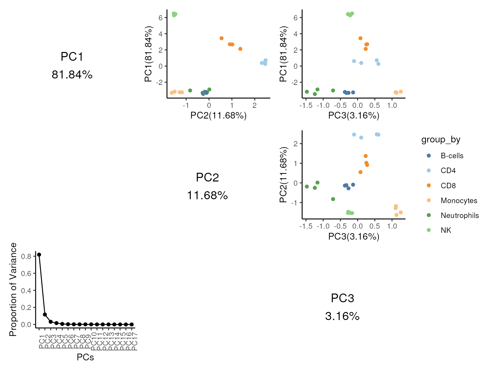
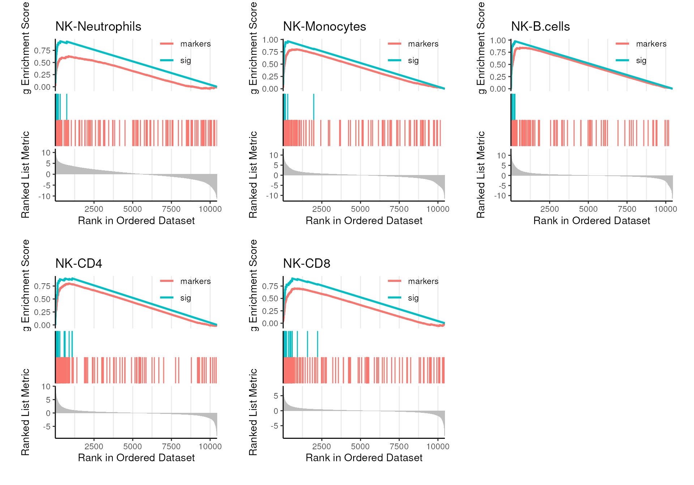

mastR: an R package for automatical signature screening
Jinjin Chen
Bioinformatics Division, Walter and Eliza Hall Institute of Medical Research, Parkville, VIC 3052, AustraliaDepartment of Medical Biology, University of Melbourne, Parkville, VIC 3010, Australiachen.j@wehi.edu.au
18 Mar 2023
Source:vignettes/mastR_Demo.Rmd
mastR_Demo.RmdIntroduction
Why do we need group markers
Identifying marker genes for specific groups is crucial in various biological and medical applications, as it allows us to distinguish between different cell types or disease states.
For example, in cancer research, identifying marker genes that are differentially expressed between cancer cells and normal cells can help diagnose and monitor the progression of the disease, as well as identify potential therapeutic targets. Similarly, in developmental biology, identifying marker genes that are specific to certain cell types or stages can help us understand the underlying mechanisms of differentiation and development.
Furthermore, marker genes can also be used in diagnostic assays to detect specific diseases or monitor treatment responses. For instance, the presence of certain marker genes in a patient’s blood or tissue sample can indicate the presence or progression of a disease.
Overall, identifying marker genes for specific groups is crucial for understanding biological processes, diagnosing diseases, and developing targeted therapies.
Why do we need immune signature (cell type)
The tumor microenvironment (TME) is made up of a diverse range of cell types (fibroblasts, epithelial cells, endothelial cells, and immune cells) as well as various extracellular components (collagens, growth factors, hormones, cytokines, etc.). TIME is reported to be highly associated with prognosis and various treatment response to many kinds of cancers.
Recent studies have highlighted the role of immune components in the TME in modulating tumor progression, making them attractive therapeutic targets. These components make up the tumor immune microenvironment (TIME), which is a subset of the TME. Subsequently, it’s proved that tumour infiltrating lymphocytes (TILs) play an essential role in tumour progression, metastasis and treatment response.
This drives TILs to be a strong prognostic indicator for better precision therapy of cancer patients. And the identification of these TILs are the subject of keen research interest due to the roles of specific subset of immune cells acting on different tissues types.
Identification of these cell types are based on flow cytometry in the past, which is limited in the granularity. But now with the advance of single cell RNA-seq and spatial transcriptomics technologies, more detailed and novel cell types or subtypes are being identified. One of the key paradygm of scRNAseq and spatial is to further investigate cell types in the TIME and understand cellullar heterogeniety in the TME.
To quantify TILs infiltration (in bulk), estimate cellular composition (in bulk), annotate single cell types (in scRNA) or identify sample states/activities, many computational methods like cell deconvolution (CIBERSORTx), marker based annotation (CelliD) and sample scoring (singscore) are developed. But to distinguish between closely related cell types, estimate cell composition and states, a refined signature is required which typiclaly requires manual curation by domain expert. With the increasing large amount of data and cell types, this is gradually getting to be intenable and will require a different approach to automatically screen such signatures.
mastR is such a softare package designed to automatically screen signature for researchers interest, which can save a lot of time and manual labor work.
What this package does
mastR, MArkers Screening Tool in R, is a package to automatically derive signature for specific group of interest in specific tissue.
With mastR, users can simply input their expression data containing the groups of interest, along with group labels, to obtain a list of marker genes (signature) for the target group.
Although there’re a lot of tools developed to generate cell type specific markers, they are all designed for scRNA-seq data. And most of them utilize machine learning to select features contributing to the classification result, which is less robust and consistent across datasets when compared with statistical method, like empirical Bayesian in limma. And some of them will always return a signature even if the data doesn’t have any.
Although DE analysis can also be done on scRNA data, like
Seurat::FindMarkers(), it’s reported that DE analysis done
on peudo-bulk scRNA data is more robust and reliable than directly done
on scRNA data.
Thus, our mastR is designed to generate a more refined list of
siganture genes from multiple group comparisons based on
edgeR and limma DE analysis result. The final
signature is selected by rank product score test for picking up genes
with high ranks in the most of comparisons. The rank can be ordered by
any gene statistic generated by limma analysis. Signature can be further
refined by keeping top n DEGs in specified comparison(s), which can help
to improve the discrimination between similar cell types.
Another novel point of mastR is that all of the current markers generation tools only consider the genes contribution to the classification, but ignore the background noise of tissue-specificity. mastR offers a background noise removal function, designed to eliminate parts of the marker genes that are highly expressed in specific tissues or cancer cells, thereby avoiding potential confusion caused by background or sample purity in specific tissue applications.
mastR also allows people to build a markers pool before signature screening, which might contain all of potential markers or interesting genes. The final signature will be integrated with this pool (by intersection), which can help to constrain the final signature within the interested pathway-related genes or functional gene-sets. People can borrow the published knowledge to build this.
The need for this package arises from the importance of identifying specific genes that are differentially expressed in different groups or tissues, as these genes can serve as biomarkers for diagnosis, prognosis, and therapeutic targeting. However, identifying marker genes can be a challenging and time-consuming task, and the presence of background noise can lead to erroneous results. Our package simplifies and streamlines this process, allowing researchers to focus on their analyses and interpretations without the burden of manual marker gene selection and background noise removal.
This report demonstrates the main functions of mastR 0.9.0.
As a simple demo, here the report will specifically demonstrate the signature screening workflow of NK cells in colorectal cancer (CRC), then assess the final result by using some visualization functions.
How does mastR screen the signature
- step 1. generate markers pool
- step 2. screen markers from the pool
- step 3. visualize signature performance
Applications
- score samples
- score samples
- estimate cellular proportion
- estimate cellular proportion
- single cell annotation
Installation
mastR R package can be installed from Bioconductor or GitHub.
The most updated version of mastR is hosted on GitHub
and can be installed using devtools::install_github()
function provided by devtools.
# if (!requireNamespace("devtools", quietly = TRUE)) {
# install.packages("devtools")
# }
# if (!requireNamespace("mastR", quietly = TRUE)) {
# devtools::install_github("Gene233/mastR")
# }
if (!requireNamespace("BiocManager", quietly=TRUE)) {
install.packages("BiocManager")
}
if (!requireNamespace("mastR", quietly = TRUE)) {
BiocManager::install("mastR")
}Step 1. Build Immune Markers Pool
The first step is to define the original markers pool this analysis will be based on.
The final signature will only be the intersected genes with the
markers pool. The whole gene list of the data will be regarded as the
markers pool if no preliminary result or intereted genes are provided.
But note that markers = NULL won’t keep any
special genes if they fail the filtration by edgeR.
Users can build the markers pool of interest from the available datasets or build from MSigDB, PanglaoDB or LM7/LM22 by our imported functions, if users have any preliminary knowledge about the target group type (cell type). All genes in the pool will be reserved for DE analysis even failed the filtration.
The standard pool building consists of:
-
- generate from sources
- generate from LM7/22 signature matrix for CIBERSORT
- generate from MSigDB
- generate from PanglaoDB
- generate from customized gene list
- merge gene-sets from all sources together
mastR allows specific markers to be conveniently loaded as follows:
NK_markersdataset is a combination of CIBERSORT LM7, LM22 and human orthologs in mice from Huntington. It contains 114 genes in total.LM7andLM22are signature matrices, you can get more details by?mastR::LM7or?mastR::LM22.msigdb_gobp_nkis a ‘GeneSetCollection’ object, contains genesets with gene-set name matched to ‘NATURAL_KILLER’ from GO:BP MSigDB v7.4 database. More details for?mastR::msigdb_gobp_nk.
The output of markers generation functions is either ‘GeneSet’ or ‘GeneSetCollection’ object.
Generate from sources
To screen the immune cell subset signatures, we need to generate a markers pool first. mastR allows people to generate markers pool from multiple resources as metinoned before.
In this demo, we will load some example datasets to show how it works. The datasets used in this report have been built within the package or can be accessed publicly. You can use the following scripts to load them into your R environment.
Markers from LM
Markers can also be generated from LM7/22 signature matrix to get
immune cells markers using function get_lm_sig().
-
LM7/22are signature matrix from CIBERSORT, contains 7/22 immune cell subsets markers lists.
Users can extract markers for cell subsets matched to the given regex
pattern from imported data LM7/LM22.
By using gsc_plot(), an UpSetR plot across all gene-sets
in the input would be printed. The input can be either ‘GeneSet’ or
‘GeneSetCollection’ objects. Using gsc_plot() we can see
how different gene-sets intersect with each other.
data("LM7", "LM22")
## only retrieve LM7
get_lm_sig(lm7.pattern = "^NK")
#> setName: LM7
#> geneIds: CD244, FASLG, ..., XCL2 (total: 21)
#> geneIdType: Symbol
#> collectionType: Null
#> details: use 'details(object)'
## only retrieve LM22
# get_lm_sig(lm22.pattern = "NK cells")
## collect both LM7 and LM22
LM <- get_lm_sig(lm7.pattern = "^NK", lm22.pattern = "NK cells")
LM
#> GeneSetCollection
#> names: LM7, LM22 (2 total)
#> unique identifiers: CD244, FASLG, ..., ZNF135 (92 total)
#> types in collection:
#> geneIdType: SymbolIdentifier (1 total)
#> collectionType: NullCollection (1 total)
## show upset diagram
gsc_plot(LM)
Markers from MSigDB
Gene-sets from MSigDB can also be searched and collected by function
get_gsc_sig().
- The Molecular Signatures Database (MSigDB) is a resource of tens of thousands of annotated gene sets for use with GSEA software, divided into Human and Mouse collections.
Users can use the species, cat,
subcat and pattern to specify which gene-sets
to be added.
All gene-sets with gene-set name matched to the regex
pattern in the whole MSigDB would be extracted if
cat and subcat are not set, otherwise only the
genesets under the union of cat and subcat
would be searched.
In this demo, we’ll use a small collection of MSigDB
msigdb_gobp_nk to show how it works.
data("msigdb_gobp_nk")
MSig <- get_gsc_sig(gsc = msigdb_gobp_nk,
pattern = "NATURAL_KILLER_CELL_MEDIATED")
MSig
#> GeneSetCollection
#> names: GOBP_NATURAL_KILLER_CELL_MEDIATED_IMMUNITY, GOBP_NATURAL_KILLER_CELL_MEDIATED_CYTOTOXICITY_DIRECTED_AGAINST_TUMOR_CELL_TARGET, ..., GOBP_POSITIVE_REGULATION_OF_NATURAL_KILLER_CELL_MEDIATED_CYTOTOXICITY (18 total)
#> unique identifiers: AP1G1, ARRB2, ..., KLRC4-KLRK1 (67 total)
#> types in collection:
#> geneIdType: SymbolIdentifier (1 total)
#> collectionType: BroadCollection (1 total)
## cut geneset name within 11 characters
gsn <- setNames(names(MSig), LETTERS[seq_along(MSig)])
for (i in seq_along(MSig)) {
setName(MSig[[i]]) <- LETTERS[i]
}
## show upset diagram of collected gene-sets
gsc_plot(MSig)
gsn ## show gene-set names
#> A
#> "GOBP_NATURAL_KILLER_CELL_MEDIATED_IMMUNITY"
#> B
#> "GOBP_NATURAL_KILLER_CELL_MEDIATED_CYTOTOXICITY_DIRECTED_AGAINST_TUMOR_CELL_TARGET"
#> C
#> "GOBP_NATURAL_KILLER_CELL_MEDIATED_IMMUNE_RESPONSE_TO_TUMOR_CELL"
#> D
#> "GOBP_REGULATION_OF_NATURAL_KILLER_CELL_MEDIATED_IMMUNITY"
#> E
#> "GOBP_NEGATIVE_REGULATION_OF_NATURAL_KILLER_CELL_MEDIATED_IMMUNITY"
#> F
#> "GOBP_POSITIVE_REGULATION_OF_NATURAL_KILLER_CELL_MEDIATED_IMMUNITY"
#> G
#> "GOBP_REGULATION_OF_NATURAL_KILLER_CELL_MEDIATED_IMMUNE_RESPONSE_TO_TUMOR_CELL"
#> H
#> "GOBP_NEGATIVE_REGULATION_OF_NATURAL_KILLER_CELL_MEDIATED_IMMUNE_RESPONSE_TO_TUMOR_CELL"
#> I
#> "GOBP_POSITIVE_REGULATION_OF_NATURAL_KILLER_CELL_MEDIATED_IMMUNE_RESPONSE_TO_TUMOR_CELL"
#> J
#> "GOBP_REGULATION_OF_NATURAL_KILLER_CELL_MEDIATED_CYTOTOXICITY_DIRECTED_AGAINST_TUMOR_CELL_TARGET"
#> K
#> "GOBP_NEGATIVE_REGULATION_OF_NATURAL_KILLER_CELL_MEDIATED_CYTOTOXICITY_DIRECTED_AGAINST_TUMOR_CELL_TARGET"
#> L
#> "GOBP_POSITIVE_REGULATION_OF_NATURAL_KILLER_CELL_MEDIATED_CYTOTOXICITY_DIRECTED_AGAINST_TUMOR_CELL_TARGET"
#> M
#> "GOBP_NATURAL_KILLER_CELL_MEDIATED_CYTOTOXICITY"
#> N
#> "GOBP_REGULATION_OF_NATURAL_KILLER_CELL_MEDIATED_CYTOTOXICITY"
#> O
#> "GOBP_PROTECTION_FROM_NATURAL_KILLER_CELL_MEDIATED_CYTOTOXICITY"
#> P
#> "GOBP_SUSCEPTIBILITY_TO_NATURAL_KILLER_CELL_MEDIATED_CYTOTOXICITY"
#> Q
#> "GOBP_NEGATIVE_REGULATION_OF_NATURAL_KILLER_CELL_MEDIATED_CYTOTOXICITY"
#> R
#> "GOBP_POSITIVE_REGULATION_OF_NATURAL_KILLER_CELL_MEDIATED_CYTOTOXICITY"As we can see, there’re 18 gene-sets in MSig, which is too many for
visualization. Thus, we can use another function
merge_markers() to merge all gene-sets into one ‘GeneSet’
object.
The input of merge_markers() can be a list of vectors of
genes, or a list of GeneSet objects, or a GeneSetCollection object.
## merge all genesets into one
MSig <- merge_markers(MSig)
setName(MSig) <- "MSigDB"It’s also available to search on the whole MSigDB without loading it
yourself by setting param data = "msigdb" in the function,
specific species or version can also be set as optional params.
Markers from PanglaoDB
Markers from PanlaoDB can also be obtained to build the markers pool
by using function get_panglao_sig().
- PanglaoDB is a database for the scientific community interested in exploration of single cell RNA sequencing experiments from mouse and human. It collects and integrates data from multiple studies and present them through a unified framework.
Users can use list_panglao_organs() and
list_panglao_types() functions to list all available organs
and cell types on PanglaoDB website and use
get_panglao_sig() function to retrive them.
## show availbable organs on PanglaoDB
list_panglao_organs()
## show available cell types of interest organ on PanglaoDB
## Number in the bracket represents the number of markers for each cell type (in both Homo and Mus).
list_panglao_types(organ = "Immune system")
## collect all "NK cells" markers from PanglaoDB website
Panglao <- get_panglao_sig(type = "NK cells")
Panglao
## number differs from 'NK cells' under list_panglao_types(organ = "Immune system"), because we only keep 'Hs' markers.Markers from customized gene list
Markers can also be generated from customized gene list. Here we use a list of natural killer (NK) cell markers from Curson et al 2019 from Curson’s Publication as a customized gene list.
-
NK_markersdataset is a combination of CIBERSORT LM7, LM22 and human orthologs in mice from Huntington. It contains 114 genes in total.
## show what NK_markers looks like:
data("NK_markers")
NK_markers
#> # A tibble: 114 × 4
#> HGNC_Symbol LM22 LM7 Huntington
#> <chr> <chr> <chr> <chr>
#> 1 APOBEC3G TRUE - -
#> 2 APOL6 TRUE - -
#> 3 AZU1 TRUE - -
#> 4 BPI TRUE - -
#> 5 CAMP TRUE - -
#> 6 CCL4 TRUE - -
#> 7 CCL5 TRUE - TRUE
#> 8 CCND2 TRUE - -
#> 9 CD160 TRUE - -
#> 10 CD2 TRUE - -
#> # … with 104 more rows
## convert NK markers into 'GeneSet' object
nk_m <- GeneSet(NK_markers$HGNC_Symbol,
geneIdType = SymbolIdentifier(),
setName = "NK_markers")Integrate Markers Pool
Now we have multiple lists of markers from different sources, to use them in the subsequent analysis, we need to merge them together.
All markers can be merged into one ‘GeneSet’ object by using function
merge_markers() we mentioned before. Each marker’s origin
will be saved as a data.frame under the ‘longDescription’ slot of the
output in json format.
gsc <- GeneSetCollection(c(nk_m, LM, MSig)) ## add Panglao if you run it
Markers <- merge_markers(gsc)
## upset plot
gsc_plot(gsc)
Markers
#> setName: merged_markers_pool
#> geneIds: APOBEC3G, APOL6, ..., KLRC4-KLRK1 (total: 167)
#> geneIdType: Symbol
#> collectionType: Computed
#> details: use 'details(object)'
## to show the table summary of merged list
head(jsonlite::fromJSON(GSEABase::longDescription(Markers)))
#> Gene NK_markers LM7 LM22 MSigDB
#> 1 AP1G1 - - - TRUE
#> 2 APOBEC3G TRUE - TRUE -
#> 3 APOL6 TRUE - TRUE -
#> 4 ARRB2 - - - TRUE
#> 5 AZU1 TRUE - TRUE -
#> 6 BPI TRUE - TRUE -Now we get a large markers pool for screening, next we need to screen signature genes from the pool for both cell subset and tissue specificity.
Step 2. Screen Markers from the Markers Pool
Screen Markers for Group
Screen Markers Against Other Groups
For group specificity, there’re 4 main steps:
- process data: filtration, normalization, sample weighting and linear model fit
- differential expression (DE) analysis
- differential expression (DE) analysis
- feature selection: pick differentially expressed genes with high ranks in most of comparisons
- integrate selected genes with markers pool
Customized external data is accepted in diverse formats: DGEList,
eSet, matrix… For example, a large collection of 1561 bulk RNA-seq
samples generated by DICE from pure populations of human immune cells,
can be used to as input data. It can be loaded by function
celldex::DatabaseImmuneCellExpressionData(), which contains
5 main cell types and 15 fine cell types.
Notice: all input data must be raw counts data or log-transformed expression data.
In this demo, we use our imported example data im_data_6
from GSE60424
as input. Only samples from healthy individuals are kept, and ‘Whole
Blood’ or ‘PBMC’ cells are removed in dataset. It can also be obtained
by GEOquery::getGEO().
-
im_data_6is a eSet object, containing RNA-seq TMM normalized counts data of 6 sorted immune cell subsets * 4 samples. More details in?mastR::im_data_6.
data("im_data_6")
im_data_6
#> ExpressionSet (storageMode: lockedEnvironment)
#> assayData: 50045 features, 24 samples
#> element names: exprs
#> protocolData: none
#> phenoData
#> sampleNames: GSM1479438 GSM1479439 ... GSM1479525 (24 total)
#> varLabels: title geo_accession ... years since diagnosis:ch1 (66
#> total)
#> varMetadata: labelDescription
#> featureData: none
#> experimentData: use 'experimentData(object)'
#> pubMedIds: 25314013
#> Annotation: GPL15456process data
To screen signature for cell subset specificity, some processes need to be done on the data first.
process_data() provided by mastR can do the genes
filtration, data normalization, samples weighting, linear model fit and
the computation of gene differential expression statistic for you.
Users need to provide an expression data with sample group labels
(containing interested target group), then it will return a
DGEList object with filtered counts (unfiltered counts data
will be saved under “original”), vfit (limma::voom() is
done), tfit (limma::lmFit() and limma::treat()
are done).
What this function does is:
Data will be filtered by the given cutoff, all gene with low expression will be removed by edgeR.
If the given data is raw count data (
normalize = TRUE), further normalization ‘TMM’ andlimma::voom()fit will be done inside the process function, otherwise thetrendof limma will be applied on the given data.Final linear model will be fitted.
gene statistic for DE analysis are computed by
limma::treat().
Let’s see what cell types are in im_data_6.
table(im_data_6$`celltype:ch1`)
#>
#> B-cells CD4 CD8 Monocytes Neutrophils NK
#> 4 4 4 4 4 4With below simple params, data processing can be easily done by
process_data():
-
dataparam can be a bulk RNA-seq expression object with cell subset labels, can be matrix, eSet, DGEList, … (expression must be either raw counts or logcounts). -
group_colparam can specify the column name of groups (labels), can be a vector whendatais a matrix.
-
target_groupparam can specify the cell target_group name of interest. Users can choose one name ingroup_colvector.
-
markersparam could specify a geneset to be kept no matter if they pass the filtration. Setting it toNULLcan skip this. Must be gene SYMBOL ID.
-
gene_idspecify the gene ID type of rownames of data when markers is not NULL, could be one of ‘ENSEMBL’, ‘SYMBOL’, ‘ENTREZ’…, default ‘SYMBOL’.
More optional param details can be found in
help(proc_data)
proc_data <- process_data(
data = im_data_6,
group_col = "celltype:ch1",
target_group = "NK",
markers = geneIds(Markers),
gene_id = "ENSEMBL" ## rownames of im_data_6 is ENSEMBL ID
# summary = TRUE ## if to show the summary of tfit result
)
#> 'select()' returned 1:many mapping between keys and columns
#> NK-Neutrophils NK-Monocytes NK-B.cells NK-CD4 NK-CD8
#> Down 4012 3949 3146 2698 2155
#> NotSig 1492 2694 4429 5001 6201
#> Up 4945 3806 2874 2750 2093
# summary(limma::decideTests(proc_data$tfit))
## add voom fitted expression as a new list of proc_data for use
proc_data$voomE <- proc_data$vfit$Evisualize QC before and after
After data processing, we need to check whether the data has been well filtered , normalized and fitted.
mastR provides visualization functions for this, to compare the data
before and after process_data() and see how well the QC is
done.
To see if the low quality genes are removed,
plot_diagnostics() can be used to show the expression
distribution, RLE and MDS plots.
expr1 <- edgeR::cpm(im_data_6@assayData$exprs, log = TRUE) ## or proc_data$original_counts
expr2 <- proc_data$voomE
## plot expression distribution, RLE and MDS
plot_diagnostics(
expr1,
expr2,
group_col = proc_data$samples$celltype.ch1
)
#> $density
#>
#> $RLE
#>
#> $MDS
Mean-variance trend can be plot by plot_mean_var() to
show the linear fit result.
## plot mean-variance trend
plot_mean_var(proc_data)
PCA can be plot by pca_matrix_plot() to show the
normalization result and if the samples can be clustered by groups. You
can select how many top n PCs to be plot by param n.
The input for this function should be log-normalized.
## plot PCA
## before process
pca_matrix_plot(expr1, group_by = proc_data$samples$celltype.ch1, n = 3)
## after process
pca_matrix_plot(expr2, group_by = proc_data$samples$celltype.ch1, n = 3)
select signature genes
Now we get processed data with DE statistic for each gene in each
comparison, then the proc_data can be passed into
select_sig() function for further genes selection based on
rank product scoring. Cell type specific signature can be obtained by
this.
-
feature_selectionparam to choose whether to use rank product (‘rankproduct’) or not (‘none’) to select DEGs from multiple comparisons of DE analysis. Default “auto” will perform “rankproduct” and switch to “none” if the number of final “UP” and “DOWN” genes are < 5.
## get the same result as there's permutation test for rank product
set.seed(123)
sig_ct <- select_sig(proc_data)
head(sig_ct)
#> GeneSetCollection
#> names: UP, DOWN (2 total)
#> unique identifiers: ENSG00000149294, ENSG00000173068, ..., ENSG00000162591 (98 total)
#> types in collection:
#> geneIdType: NullIdentifier (1 total)
#> collectionType: NullCollection (1 total)Note: All above steps from @ref(process) to
@ref(selection) for screening group signature can be done by one
integrated function get_degs().
get_degs() function can filter low expression genes out
from immune dataset, normalize and fit voom model to data if
normalize = TRUE, then a processed data
proc_data object and a differentially expressed
GeneSetCollection (‘UP’ and ‘DOWN’) will be returned as output.
QC plots can also be shown at the same time by setting optional param
plot = TRUE.
DEG_6 <- get_degs(
data = im_data_6,
group_col = "celltype:ch1",
target_group = "NK",
markers = geneIds(Markers),
gene_id = "ENSEMBL" ## convert ensembl IDs of rownames into symbols if gene_id != "SYMBOL"
)
## `proc_data` object would be saved
proc_data <- DEG_6$proc_data
DEG_6$DEGs
GSEABase::geneIds(DEG_6$DEGs)
DEG_6$proc_data$vfit$design ## show the design matrixintersect with markers pool
After getting specific signature genes for the target group, we will
only keep those UP regulated genes which are also present in our markers
pool Markers, to constrain the final signature wthin the
interested gene list.
PCA can be used to show clearer separation of NK cells from other cells by using our screened UP DEGs. And the intersected genes with markers pool explain more variance in PC1 compared with non-intersected DEGs.
## convert ensembl IDs into symbols to match markers pool
deg_up <- mapIds(org.Hs.eg.db::org.Hs.eg.db,
geneIds(sig_ct[["UP"]]),
"SYMBOL", "ENSEMBL")
#> 'select()' returned 1:1 mapping between keys and columns
## markers specific for NK cells
m_ct <- intersect(geneIds(Markers), deg_up)
names(m_ct) <- names(deg_up)[match(m_ct, deg_up)] ## set ensembl ID as names for downstream visualization
m_ct
#> ENSG00000122223 ENSG00000198821 ENSG00000172543 ENSG00000145649 ENSG00000197540
#> "CD244" "CD247" "CTSW" "GZMA" "GZMM"
#> ENSG00000100385 ENSG00000183542 ENSG00000150045 ENSG00000149294 ENSG00000189430
#> "IL2RB" "KLRC4" "KLRF1" "NCAM1" "NCR1"
#> ENSG00000168229 ENSG00000041353 ENSG00000198574 ENSG00000074966 ENSG00000115085
#> "PTGDR" "RAB27B" "SH2D1B" "TXK" "ZAP70"
#> ENSG00000134545 ENSG00000150637
#> "KLRC1" "CD226"
## PCA shows clear separation of NK cells
## after intersection
pca_matrix_plot(proc_data$vfit$E[names(m_ct),],
group_by = proc_data$samples$celltype.ch1,
n = 3) + ggtitle("After intersection")
## before intersection
pca_matrix_plot(proc_data$vfit$E[names(deg_up),],
group_by = proc_data$samples$celltype.ch1,
n = 3) + ggtitle("Before intersection")
Note: There’s also a wrapper function
filter_subset_sig() which can directly do the whole Step 2
in one step. The result would be the same as running the above workflow
step by step.
filter_subset_sig() can also be helpful when you have
multiple datasets (more details in Section @ref(multi-data)). It can
output final signature after aggregating signature lists from all
datasets.
# run by wrapped function in one-step
set.seed(123)
m_ct <- filter_subset_sig(
data = im_data_6,
markers = geneIds(Markers),
group_col = "celltype:ch1",
target_group = "NK",
gene_id = "ENSEMBL"
)Remove Markers with Background Noise in Tissue (optional)
After screening signature for group specificity, we need to increase the tissue specificity by removing background noise for the signature now, what we need to do is:
-
filter out cancer cell expressed genes
In order to remove background noise from the marker genes, we utilized a signal-to-noise ratio (SNR) approach to filter out genes with low SNR values. This was done to eliminate genes that have similar expression patterns across the target group and background tissues, which may be due to non-specific expression or technical artifacts.
The SNR is calculated as the difference between the mean expression value of the group of interest and the mean expression value of the background group, divided by the standard deviation of the background group. Genes with low SNR values are considered to have low discriminative power between the group of interest and the background group, and are therefore filtered out.
By removing genes with low SNR values, we are able to improve the specificity and accuracy of the marker genes, as well as reduce potential confounding effects caused by non-specific expression or technical artifacts. This approach is commonly used in gene expression analysis to improve the reliability of differential expression analysis and biomarker identification.
By doing this, we can guarantee the activity of our final signature for infiltrating immune cells won’t be affected by tumor purity when it’s applied on tumor samples.
-
optional
DE analysis to compare tumor infiltrating immune cells vs normal immune cells (e.g. PBMC or normal tissue resident immune cells), add DEGs into markers pool or combine it with the result of step 2. to increase tissue/cancer specificity.
mastR provides function remove_bg_snr() to remove genes
with background noise in cancer cells or tissues. Users need to provide
a data as signal data (e.g. immune cell data) and a data as background
noise data (e.g. cancer cells or tissue cells), then
remove_bg_snr() will compute SNR (signal to noise ratio)
for each gene in the given markers, and remove those genes with low SNR.
This can ensure our immune signature won’t be affected by tumor
purity.
Based on the bg_data input format, this function can be
used in 2 ways:
- use CCLE as
bg_datainput
- use customized data as
bg_datainput
use CCLE as bg_data
The default setting of this remove_bg_snr() uses CCLE
from DepMap CCLE,
containing RSEM quantified TPM data of 1392 cancer cell lines (until
2022.04).
The Cancer Cell Line Encyclopedia (CCLE) is a compilation of gene expression, chromosomal copy number and massively parallel sequencing data from more than 1,000 human cancer cell lines.
To specify cell subset markers for cancer type, use
remove_bg_snr() function to remove failing genes which are
also highly expressed by CRC adherent cell lines per se. This
can ensure our immune signature won’t be affected by tumor purity.
-
bg_datacan be either “CCLE” or expression dataset, e.g. matrix, eSet, DGEList, Seurat and so on.
-
sig_datacan be a matrix or DGEList, as signal data, always use processed data afterprocess_data(). -
b_group_colparam is the group vector ofbg_datasamples, or the name of group column.
-
b_target_groupparam is an regex pattern to specify the samples of interest, e.g. choose ‘colorectal’ to select all colorectal adherent cell lines from CCLE.
-
s_group_colis a vector or character, to specify the group of target_group insig_data, or the name of group column. -
s_target_groupis a regex pattern, to specify the target group of interest insig_data. -
markersis the genes need to be filtered, should be gene symbols. -
snrparam is the the cutoff of SNR to screen markers which are not or lowly expressed in bg_data.
Note: Both of bg_data and
sig_data should be log-normalized.
## load CCLE data
CCLE <- depmap::depmap_TPM()
CCLE_meta <- depmap::depmap_metadata()
## filter
m_ccl <- remove_bg_snr(bg_data = "CCLE",
sig_data = proc_data,
b_group_col = "primary_disease",
b_target_group = "colorectal",
s_group_col = "celltype.ch1",
s_target_group = "NK",
markers = geneIds(Markers),
filter = c(1, 10), ## needed when bg_data is 'CCLE'
gene_id = c("SYMBOL", "ENSEMBL"),
s_slot = "voomE",
ccle_tpm = CCLE, ## only provided when data = 'CCLE'
ccle_meta = CCLE_meta)
## or without loading CCLE yourself
m_ccl <- remove_bg_snr(sig_data = proc_data,
b_group_col = "primary_disease",
b_target_group = "colorectal",
s_group_col = "celltype.ch1",
s_target_group = "NK",
markers = geneIds(Markers),
filter = c(1, 10),
gene_id = c("SYMBOL", "ENSEMBL"),
s_slot = "voomE")use customized dataset as input
Other customized data is also accepted as bg_data in
diverse formats: eSet, matrix, DGEList… But all input must be
log-transformed expression data.
In this demo, we use a small imported dataset ccle_crc_5
in mastR as a customized dataset, the expression of it is logTPM.
-
ccle_crc_5is a DGEList object only contains 5 CRC cell line samples from CCLE. More details forhelp(ccle_crc_5).
data("ccle_crc_5")
ccle_crc_5[1:10,]
#> An object of class "DGEList"
#> $counts
#> SNU283_LARGE_INTESTINE TGBC18TKB_LARGE_INTESTINE SW837_LARGE_INTESTINE
#> TSPAN6 4.91408610 6.045923 5.2570106
#> TNMD 0.17632277 0.000000 0.3334237
#> DPM1 6.94684781 6.724105 6.9242187
#> SCYL3 2.57773093 2.260026 2.9653225
#> C1orf112 3.85399565 3.835924 4.7618171
#> FGR 0.00000000 0.000000 0.1890338
#> CFH 0.08406426 4.115200 0.2509616
#> FUCA2 4.85549144 6.263034 6.9090530
#> GCLC 4.93404465 4.398487 5.8750428
#> NFYA 3.68144927 3.727920 4.0703893
#> SNU1040_LARGE_INTESTINE HT29_LARGE_INTESTINE
#> TSPAN6 5.16188768 4.39985467
#> TNMD 0.46466827 0.00000000
#> DPM1 6.67849451 6.71836163
#> SCYL3 2.48284828 2.78450398
#> C1orf112 3.32624970 3.46858332
#> FGR 1.48542683 0.01435529
#> CFH 0.05658353 4.08151007
#> FUCA2 5.96809075 5.35508676
#> GCLC 5.15583017 5.10097765
#> NFYA 4.81249823 4.32481060
#>
#> $samples
#> group lib.size norm.factors cancer
#> SNU283_LARGE_INTESTINE 1 49889.02 1 CRC
#> TGBC18TKB_LARGE_INTESTINE 1 49489.64 1 CRC
#> SW837_LARGE_INTESTINE 1 56426.42 1 CRC
#> SNU1040_LARGE_INTESTINE 1 54366.12 1 CRC
#> HT29_LARGE_INTESTINE 1 49232.06 1 CRC
## markers against for CRC cell lines
m_ccl <- remove_bg_snr(
bg_data = ccle_crc_5,
sig_data = proc_data,
b_group_col = "cancer",
b_target_group = "CRC",
s_group_col = "celltype.ch1",
s_target_group = "NK",
markers = geneIds(Markers),
filter = c(1, 2), ## as there're only 5 samples in ccle_crc_5
gene_id = c("SYMBOL", "ENSEMBL"), ## different gene IDs in bg_ and sig_ data
s_slot = "voomE" ## use voomE of proc_data as input
)
#> 'select()' returned 1:many mapping between keys and columns
#> Warning in remove_bg_snr(bg_data = bg_data, sig_data = sig_data[[s_slot]], : Gene CCL4 is not in the sig_data! So remove it!
#> Gene CCL5 is not in the sig_data! So remove it!
#> Gene KIR2DL2 is not in the sig_data! So remove it!
#> Gene KIR2DL5A is not in the sig_data! So remove it!
#> Gene KIR2DS2 is not in the sig_data! So remove it!
#> Gene KIR2DS5 is not in the sig_data! So remove it!
#> Gene KLRA1P is not in the sig_data! So remove it!
#> Gene LOC653757 is not in the sig_data! So remove it!
#> Gene MGC24103 is not in the sig_data! So remove it!
#> Gene TRDC is not in the sig_data! So remove it!
#> Gene MGC61571 is not in the sig_data! So remove it!
#> Gene PIK3R6 is not in the sig_data! So remove it!
head(m_ccl)
#> [1] "IL32" "RAB27B" "STYK1" "RAB27A" "TXK" "TTC38"Final Group Signature for Tissue
After above steps, now we need to integrate the results together.
As we want the final signature to be specific to the target cell subset while less affected by the tissue/cancer purity, intersection is preferred to select the final signature after both specificity screening: cell type (subset) and cancer (tissue) type.
sig_NK_CRC <- intersect(m_ct, m_ccl)
sig_NK_CRC
#> [1] "CD244" "CD247" "CTSW" "GZMA" "GZMM" "IL2RB" "KLRC4" "KLRF1"
#> [9] "NCAM1" "NCR1" "PTGDR" "RAB27B" "SH2D1B" "TXK" "ZAP70" "KLRC1"
#> [17] "CD226"But here, if we directly use the m_ct instead of
Markers as input markers for function
remove_bg_snr(), then m_ccl is already the
intersection result of original m_ccl and
m_ct, so we can skip this.
Now we get the final signature specific for both cell type and cancer type!
Step 3. Visualize The Screening Effect
Now that we get our specific signature, we need to assess how well this signature can discriminate our target group from others. To easily realize this, some popular visualization functions are implemented in mastR.
-
pca_matrix_plot()for matrix of PCA plots with top n PCs.To show if the target group can be separated from other groups and how well the separation is. Users can also know how much variance has been explained by PC1 with the signature.
-
sig_heatmap()for signature heatmap across groups and its comparsion with markers pool.To validate if the signature shows clear and differential expression pattern between the target group and others, and if the pattern is clearer and cleaner after the screening when compared with un-screeed markers pool.
-
sig_rankdensity_plot()for signature genes rank density distribution across groups.To see if the signature genes are highly expressed within each sample of the target group while lowly expressed in others.
-
sig_boxplot()for signature expression or singscore boxplot across groups.To test the overall performance of the whole signature when applying it for scoring, singscore is used to compute the rank score with the whole signature. The boxplot across groups can be used to test if the whole signature is powerful enough to distinguish the target group from others on scoring level. Median expression of each signature gene is also allowed to plot.
-
sig_scatter_plot()for signature scaled expression scatter plot of the target group vs all other groups respectively.To visualize the correlation of the signature between the target and other groups, the row-scaled gene expression is computed to make the scatter plot. Based on it, we can easily see the co-expression correlation and signature’s specificity.
-
sig_gseaplot()for gene-set enrichment analysis result display.To further validate if the signature is significantly enriched in our target group compared with other groups,
clusterProfiler::GSEA()analysis is done inside this function. Users can choose to display ‘dotplot’ or gseaplot’ byclusterProfiler::GSEA().
PCA matrix plot
To see if our curated NK cells signature has more distinguishable expression pattern from other immune cell subsets, we can use PCA plot again here to show it.
Loadings can be drawn to show which genes are relevant to NK cells, and result shows most of signature genes are indicating NK cells.
## as proc_data shows better discrimination, use it for visualization
pca_matrix_plot(
data = proc_data,
features = sig_NK_CRC,
group_by = "celltype.ch1",
gene_id = "ENSEMBL",
slot = "voomE",
n = 3
)
#> 'select()' returned 1:many mapping between keys and columns
## loadings can be shown by setting loading = TRUE
pca_matrix_plot(
data = proc_data,
features = sig_NK_CRC,
loading = TRUE,
group_by = "celltype.ch1",
gene_id = "ENSEMBL",
slot = "voomE",
n = 3
)
#> 'select()' returned 1:many mapping between keys and columns
#> Warning: ggrepel: 6 unlabeled data points (too many overlaps). Consider
#> increasing max.overlaps
Heatmap
sig_heatmap() function can plot the original NK cells
markers and curated signatures expression pattern heatmaps in immune
datasets.
-
sigsparam is the final curated signature symbols, whilemarkersparam is the original markers pool.
-
scalecould specify thecolumnorrowto be scaled or no scaling bynone.
- `rank_plot`` is used to decide if to gene rank instead of expression for heatmap.
sig_heatmap(
data = proc_data,
sigs = sig_NK_CRC,
group_col = "celltype.ch1",
markers = geneIds(Markers),
gene_id = "ENSEMBL",
slot = "voomE",
scale = "row",
show_column_den = FALSE,
show_row_den = FALSE,
show_column_names = FALSE,
show_row_names = FALSE
)
#> 'select()' returned 1:many mapping between keys and columns
#> Gene CCL4 is not in data
#> Gene CCL5 is not in data
#> Gene KIR2DL2 is not in data
#> Gene KIR2DL5A is not in data
#> Gene KIR2DS2 is not in data
#> Gene KIR2DS5 is not in data
#> Gene KLRA1P is not in data
#> Gene LOC653757 is not in data
#> Gene MGC24103 is not in data
#> Gene TRDC is not in data
#> Gene MGC61571 is not in data
#> Gene PIK3R6 is not in data
#> 'select()' returned 1:many mapping between keys and columns
## for multiple datasets
# sig_heatmap(
# data = list(data_6 = im_data_6,
# proc_data = proc_data),
# sigs = sig_NK_CRC,
# group_col = c("celltype:ch1", "celltype.ch1"),
# markers = geneIds(Markers),
# gene_id = "ENSEMBL"
# ) + patchwork::plot_layout(guides = "collect", ncol = 1)We can see the expression pattern of the signature is more distinguishable in NK cells.
Rank Density Plot
Use sig_rankdensity_plot() function to make rank density
plot for all cell subsets in the data.
By setting aggregate = TRUE, only one plot for each cell
type with mean expression would be shown.
We might want to see the rank density plot in more than 1 datasets for comparison, this can be done by simply passing a list of datasets to function.
# ## visualization on both original and processed data
# sig_rankdensity_plot(
# data = list(im_data_6 = im_data_6,
# process_Data = proc_data),
# sigs = sig_NK_CRC,
# group_col = c("celltype:ch1", "celltype.ch1"),
# gene_id = "ENSEMBL",
# slot = "voomE"
# )
## visualization on aggregated data
sig_rankdensity_plot(
data = proc_data,
sigs = sig_NK_CRC,
group_col = "celltype.ch1",
aggregate = TRUE,
gene_id = "ENSEMBL",
slot = "voomE"
)
#> 'select()' returned 1:many mapping between keys and columns
We can find, processed data shows more digstinguishable rankdensity distribution of screened NK signature genes.
Signature Score Boxplot
To see if the curated NK cells signatures have evident higher
abundance in NK cells than other immune cell subsets, use
sig_boxplot() function to make boxplot of the NK scores for
all cell subsets in the data.
NK score is calculated by singscore package.
sig_boxplot(
data = proc_data,
sigs = sig_NK_CRC,
group_col = "celltype.ch1",
target_group = "NK",
gene_id = "ENSEMBL",
slot = "voomE"
)
#> 'select()' returned 1:many mapping between keys and columns
## To make boxplots for more than 1 immune datasets at once:
# sig_boxplot(
# data = list(data_6 = im_data_6,
# proc_data = proc_data),
# sigs = sig_NK_CRC,
# group_col = c("celltype:ch1", "celltype.ch1"),
# target_group = "NK",
# gene_id = "ENSEMBL"
# ) * guides(col = "none")Obviously, our signature always shows significantly higher score in NK cells.
Signature Abundance Boxplot
sig_boxplot() function can also generate boxplot of the
NK signature abundance for all cell subsets in the data by setting
type = "expression".
sig_boxplot(
data = proc_data,
sigs = sig_NK_CRC,
group_col = "celltype.ch1",
target_group = "NK",
type = "expression",
gene_id = "ENSEMBL",
slot = "voomE"
)
#> 'select()' returned 1:many mapping between keys and columns
It’s clear the score can increase the difference between NK cells and others.
Signature Abundance Scatter Plot
To see if the curated NK cells signature shows higher specificity to
NK cells than other immune cell subsets. Use
sig_scatter_plot() function to make scatter plot of the NK
signature abundance for all cell subsets in the data.
If the signature shows specificity to NK, then most of signature genes should appear in left-top region (scaled expression > 1 in NK, < 1 in other), while the gene present in right-top region should represent the co-expression in the both groups.
sig_scatter_plot(
data = proc_data,
sigs = sig_NK_CRC,
group_col = "celltype.ch1",
target_group = "NK",
gene_id = "ENSEMBL",
slot = "voomE"
)
#> 'select()' returned 1:many mapping between keys and columns
## To make scatter plot for more than 1 immune datasets at once:
# sig_scatter_plot(
# data = list(data_6 = im_data_6,
# proc_data = proc_data),
# sigs = sig_NK_CRC,
# group_col = c("celltype:ch1", "celltype.ch1"),
# target_group = "NK",
# gene_id = "ENSEMBL")Based on scatter plot result, we can actually do further filtration to improve signature specificity by removing signature genes present in right bottom or left bottom region.
Signature GSEA plot
To see if the curated signature is enriched in NK cells than other
immune cell subsets. Use sig_gseaplot() function to make
GSEAplot.
## dotplot
sig_gseaplot(
data = proc_data,
sigs = list(sig = sig_NK_CRC, markers = geneIds(Markers)),
group_col = "celltype.ch1",
target_group = "NK",
gene_id = "ENSEMBL",
slot = "voomE"
)
#> 'select()' returned many:many mapping between keys and columns
#>
#> preparing geneSet collections...
#> GSEA analysis...
#> leading edge analysis...
#> done...
#> preparing geneSet collections...
#> GSEA analysis...
#> leading edge analysis...
#> done...
#> preparing geneSet collections...
#> GSEA analysis...
#> leading edge analysis...
#> done...
#> preparing geneSet collections...
#> GSEA analysis...
#> leading edge analysis...
#> done...
#> preparing geneSet collections...
#> GSEA analysis...
#> leading edge analysis...
#> done...
## gseaplot
sig_gseaplot(
data = proc_data,
sigs = list(sig = sig_NK_CRC, markers = geneIds(Markers)),
group_col = "celltype.ch1",
target_group = "NK",
gene_id = "ENSEMBL",
slot = "voomE",
method = "gseaplot"
)
#> 'select()' returned many:many mapping between keys and columns
#> preparing geneSet collections...
#> GSEA analysis...
#> leading edge analysis...
#> done...
#> preparing geneSet collections...
#> GSEA analysis...
#> leading edge analysis...
#> done...
#> preparing geneSet collections...
#> GSEA analysis...
#> leading edge analysis...
#> done...
#> preparing geneSet collections...
#> GSEA analysis...
#> leading edge analysis...
#> done...
#> preparing geneSet collections...
#> GSEA analysis...
#> leading edge analysis...
#> done...
It’s clear that our screened signature is enriched in all comparisons.
Refine Signature Specificity
According to the visualization result, we can see our NK signature shows good performance in separating NK cells with all other cells. But CD8+ T cells still show similar abundance to NK cells in some signature genes expression, which might impair the ability of signature to distinguish NK cells from CD8+ T cells.
But we know those genes with similar abundance across NK and CD8+ T are importance and distinguishable for separating NK cells from other non-CD8+ T cells. So we don’t recommend to simply delete those genes based on our abundance scatter plot.
Instead, here we implemented a better way to increase the difference between the ambiguous cell types.
By setting keep.top and keep.group, we can
easily keep the top n DEGs of specified DE comparisons, DEGs are ranked
based on Rank param. For instance, here we want keep more
distinguishable genes between NK and CD8+ T cells, we can set
keep.group = "CD8" or keep.group = "NK-CD8".
keep.top can specify how many top genes in that comparison
should be kept.
## keep top 200 DEGs in 'NK-CD8'
set.seed(123)
m_ct_refine <- filter_subset_sig(
data = im_data_6,
markers = geneIds(Markers),
group_col = "celltype:ch1",
target_group = "NK",
gene_id = "ENSEMBL",
keep.top = 200,
keep.group = "CD8"
)
#> 'select()' returned 1:many mapping between keys and columns
#> 'select()' returned 1:many mapping between keys and columns
#> NK-Neutrophils NK-Monocytes NK-B.cells NK-CD4 NK-CD8
#> Down 4012 3949 3146 2698 2155
#> NotSig 1492 2694 4429 5001 6201
#> Up 4945 3806 2874 2750 2093
## get 8 more new signature genes
sig_NK_CRC_refine <- intersect(m_ct_refine, m_ccl)
setdiff(sig_NK_CRC_refine, sig_NK_CRC)
#> [1] "CD160" "ELOVL6" "GZMB" "IL12RB2" "NAALADL1" "NME8" "TTC38"
#> [8] "XCL2" "HAVCR2"
## most NK-CD8 top DEGs are not in the markers pool
deg_tables <- get_de_table(
data = im_data_6,
group_col = "celltype:ch1",
target_group = "NK"
)
#> NK-Neutrophils NK-Monocytes NK-B.cells NK-CD4 NK-CD8
#> Down 4009 3944 3146 2694 2153
#> NotSig 1476 2678 4405 4985 6183
#> Up 4926 3789 2860 2732 2075
intersect(mapIds(org.Hs.eg.db::org.Hs.eg.db,
rownames(deg_tables$`NK-CD8`)[1:200],
"SYMBOL", "ENSEMBL"),
geneIds(Markers)) ## only 19 out of top 200 DEGs are in the pool
#> 'select()' returned 1:many mapping between keys and columns
#> [1] "NCAM1" "KLRF1" "SH2D1B" "LTB" "PTGDR" "IL2RB"
#> [7] "KLRC1" "NCR1" "RAB27B" "CD247" "NAALADL1" "HAVCR2"
#> [13] "CD244"We only get 17 more new genes when keeping top 200 DEGs in ‘NK-CD8’,
that’s because majority of those genes are not in our markers pool
Markers and can’t pass the screening step. So it would be
better to create a large enough pool for screening in case we miss any
useful DEGs.
Visualization after refinement
After the refinement, we have 2 signature lists now. By comparing the 2 signatures performance, we can see the difference of NK vs CD4 and CD8 T cells increased, but the difference vs monocytes and neutrophils dropped a bit.
## gsea dotplot
sig_gseaplot(
data = proc_data,
sigs = list(refined = sig_NK_CRC_refine,
pre_ref = sig_NK_CRC),
group_col = "celltype.ch1",
target_group = "NK",
gene_id = "ENSEMBL",
slot = "voomE"
)
#> 'select()' returned many:many mapping between keys and columns
#> preparing geneSet collections...
#> GSEA analysis...
#> leading edge analysis...
#> done...
#> preparing geneSet collections...
#> GSEA analysis...
#> leading edge analysis...
#> done...
#> preparing geneSet collections...
#> GSEA analysis...
#> leading edge analysis...
#> done...
#> preparing geneSet collections...
#> GSEA analysis...
#> leading edge analysis...
#> done...
#> preparing geneSet collections...
#> GSEA analysis...
#> leading edge analysis...
#> done...
Abundance scatter plot also shows more specific genes to NK compared with CD4/8 T cells.
## after refine
sig_scatter_plot(
data = proc_data,
sigs = sig_NK_CRC_refine,
group_col = "celltype.ch1",
target_group = "NK",
gene_id = "ENSEMBL",
slot = "voomE"
) + ggtitle("Signature after Refinement")
#> 'select()' returned 1:many mapping between keys and columns
## before refine
sig_scatter_plot(
data = proc_data,
sigs = sig_NK_CRC,
group_col = "celltype.ch1",
target_group = "NK",
gene_id = "ENSEMBL",
slot = "voomE"
) + ggtitle("Signature before Refinement")
#> 'select()' returned 1:many mapping between keys and columns
Screen on Multiple Datasets
Till now, the whole workflow of mastR usage is complete.
But this demo is just a show case on single dataset, mastR can also be applied on multiple datasets.
After the Step 2d (Section @ref(intersect-pool)), for:
- single dataset
Return the intersection result as the signature.
- single dataset
- multiple datasets
After Step 2d, choose one combination method (uniondefault) to aggregate signature lists generated from different datasets. Robust Rank Aggregation (“RRA”) is another method to select in mastR, which detects genes that are ranked consistently better than expected under null hypothesis of uncorrelated inputs and assigns a significance score for each gene.
- multiple datasets
Instead of integrating datasets into one larger dataset to fit into
one linear model, we screen signature in each dataset respectively and
users can choose to aggregate the ranked lists via
RobustRankAggreg method by setting
comb = "RRA" (as our output of signature by screening
function is ordered based on the given Rank).
The advantage is that we can avoid over-normalizing or mis-correcting when carrying out data integration. And we can get more robust and conserved signature across datasets. It’s better than “RemoveBatchEffect” sometimes.
Of course, easy way such as “union” and “intersect” is also supported
besides “RRA” (Robust Rank Aggreg), by setting comb = union
or comb = intersect.
It’s better to use union when you get only a few genes screened for each dataset, while “RRA” is better to pick up significant genes from large DEG lists, “intersect” is proper for highly overlapping gene lists.
Here, we will repeatedly use im_data_6 to show how it works on multiple datasets.
## In the demo, we just repeatedly use im_data_6 as a show case
set.seed(123)
m_ct_m <- filter_subset_sig(
data = list(A = im_data_6, B = im_data_6),
markers = geneIds(Markers),
group_col = "celltype:ch1",
target_group = "NK",
gene_id = "ENSEMBL"
)
## we will get exactly the same list
## if we choose 'union' or 'intersect' as combination
setequal(m_ct_m, m_ct)
## but we will only get the genes appear at top rank across gene lists
## if we choose 'RRA', s_thres is to determine the threshold for ranking score
set.seed(123)
m_ct_m <- filter_subset_sig(
data = list(A = im_data_6, B = im_data_6),
markers = geneIds(Markers),
group_col = "celltype:ch1",
target_group = "NK",
gene_id = "ENSEMBL",
comb = "RRA", ## change this to use different strategy, default is "union"
s_thres = 0.5 ## only work when comb = "RRA", set a threshold for ranking score
)
## we can get only 8 signature genes this time
m_ct_mScreen on scRNA data
Although mastR is developed for bulk RNA data, to make use of
abundant scRNA resource, mastR also provides
pseudo_samples() function to help convert scRNA data into
pseudo-bulk data, which can then be used in the above workflow.
pseudo_samples() can help aggregate cells into
pseudo-sample according to the given factor(s).
## create a test scRNA object of 100 genes x 100 cells
counts <- matrix(abs(rpois(10000, 10)), 100)
rownames(counts) <- 1:100
colnames(counts) <- 1:100
meta <- data.frame(
subset = rep(c("A", "B"), 50),
level = rep(1:4, each = 25)
)
rownames(meta) <- 1:100
pb <- pseudo_samples(counts, by = meta)
pb <- edgeR::DGEList(counts = pb, group = gsub("\\..*", "", colnames(pb)))
filter_subset_sig(pb, group_col = "group", target_group = "A")
## Seurat or SCE object are also accepted
# scRNA <- Seurat::CreateSeuratObject(counts = counts, meta.data = meta)
# pseudo_samples(scRNA, by = c("subset","level"))Application on Simulated data
After getting the signature, we can apply it in multple ways. In this short demo, we will just show 3 simple applications of it.
Here we will simulate a scRNA data using splatter. Then
randomly pseudo-bulking it to generate pseudo bulk data for scoring and
deconvolution.
library(splatter)
## set seed for reproduce as there's permutation inside
set.seed(123)
sim_params <- newSplatParams(
nGenes = 1000,
batchCells = 3000,
group.prob = seq(0.1, 0.4, length.out = 4),
de.prob = 0.02,
# de.downProb = 0, ## only set up-regulated genes for each group
de.facLoc = 0.5,
de.facScale = 0.4
)
data_sim <- splatSimulate(sim_params, method = "groups")
markers_list <- lapply(rowData(data_sim)[,paste0("DEFacGroup", 1:4)],
\(x) rownames(data_sim[x > 1]))
## aggregate into pseudo-bulk samples
pb <- pseudo_samples(data_sim,
by = c("Batch", "Group"),
min.cells = 50, max.cells = 100)
dge <- DGEList(
counts = pb,
samples = data.frame(group = gsub(".*\\.(.*)_.*", "\\1",colnames(pb)),
Batch = gsub("(.*)\\..*", "\\1",colnames(pb)),
sampleID = gsub("(.*)_.*", "\\1",colnames(pb)))
)
set.seed(123)
sig_ls <- lapply(paste0("Group", 1:4), \(x) {
filter_subset_sig(
data = dge,
markers = NULL,
group_col = "group",
target_group = x,
lfc = 0
)
})
names(sig_ls) <- paste0("Group", 1:4)
## venn plot
p <- lapply(1:4, \(i) ggvenn::ggvenn(list(sig = sig_ls[[i]],
marker = markers_list[[i]]),
show_percentage = FALSE) +
ggtitle(names(sig_ls)[i]))
patchwork::wrap_plots(p)
## heatmap
sig_heatmap(
cpm(dge, log = TRUE),
sigs = c(sig_ls, list("TP53")), ## add a real gene to pass gene check
group_col = dge$samples$group,
scale = "row",
show_column_den = FALSE,
show_row_den = FALSE,
cluster_column_slices = FALSE,
cluster_row_slices = FALSE
)
library(dplyr)
## randomly generate aggregating idx
set.seed(123)
data_sim$rand_idx <- sample.int(30, ncol(data_sim), replace = TRUE)
## aggregate into pseudo-bulk samples based on rand_idx
pb_r <- pseudo_samples(data_sim, by = c("Batch", "rand_idx"))
dge_r <- DGEList(
counts = pb_r,
samples = data.frame(group = gsub(".*\\.(.*)_.*", "\\1",colnames(pb_r)),
Batch = gsub("(.*)\\..*", "\\1",colnames(pb_r)),
sampleID = gsub("(.*)_.*", "\\1",colnames(pb_r)))
)
## append cellular composition
tmp <- as.data.frame(data_sim@colData) |>
group_by(rand_idx, Group) |>
summarise(count = n()) |>
pivot_wider(names_from = Group, values_from = count) |>
mutate(rand_idx = factor(rand_idx))
tmp[,-1] <- signif(tmp[,-1] / rowSums(tmp[,-1]), 2)
dge_r$samples <- left_join(dge_r$samples, tmp, by = c("group" = "rand_idx"))
## data process
keep <- filterByExpr(dge_r)
dge_r <- dge_r[keep,, keep.lib.sizes = FALSE]
dge_r <- calcNormFactors(dge_r, method = "TMM")Score
library(singscore)
rank_data <- rankGenes(edgeR::cpm(dge_r, log = TRUE))
## score based on sig_ls
scores <- multiScore(rank_data, upSetColc = gls2gsc(sig_ls))
tmp <- pivot_longer(cbind(Sample = colnames(dge_r), dge_r$samples[,6:9]),
-Sample, names_to = "Group", values_to = "Prop")
tmp <- t(scores$Scores) |>
data.frame(Sample = colnames(scores$Scores)) |>
pivot_longer(-Sample, names_to = "Group", values_to = "Score") |>
left_join(tmp)
ggplot(tmp, aes(x = Prop, y = Score, col = Group)) +
geom_point() +
facet_wrap(~Group, scales = "free") +
ggpubr::stat_cor() +
theme_classic()
## score based on markers_list
scores <- multiScore(rank_data, upSetColc = gls2gsc(markers_list))
tmp <- pivot_longer(cbind(Sample = colnames(dge_r), dge_r$samples[,6:9]),
-Sample, names_to = "Group", values_to = "Prop")
tmp$Group <- paste0("DEFac", tmp$Group)
tmp <- t(scores$Scores) |>
data.frame(Sample = colnames(scores$Scores)) |>
pivot_longer(-Sample, names_to = "Group", values_to = "Score") |>
left_join(tmp)
ggplot(tmp, aes(x = Prop, y = Score, col = Group)) +
geom_point() +
facet_wrap(~Group, scales = "free") +
ggpubr::stat_cor() +
theme_classic()Annotation
library(singscore)
## normalization
data_sim <- scuttle::computePooledFactors(data_sim, clusters = data_sim$Group)
data_sim <- scuttle::logNormCounts(data_sim)
## use singscore for annotation
rank_data <- rankGenes(data_sim@assays@data$logcounts)
## score using sig_ls
scores <- multiScore(rank_data, upSetColc = gls2gsc(sig_ls))
data_sim$Pred <- paste0("Group", apply(scores$Scores, 2, which.max))
table(data_sim$Pred == data_sim$Group)
## score using markers_list
scores <- multiScore(rank_data, upSetColc = gls2gsc(markers_list))
data_sim$Pred <- paste0("Group", apply(scores$Scores, 2, which.max))
table(data_sim$Pred == data_sim$Group)Session Info
sessionInfo()
#> R version 4.2.2 (2022-10-31)
#> Platform: x86_64-pc-linux-gnu (64-bit)
#> Running under: Ubuntu 22.04.2 LTS
#>
#> Matrix products: default
#> BLAS: /usr/lib/x86_64-linux-gnu/openblas-pthread/libblas.so.3
#> LAPACK: /usr/lib/x86_64-linux-gnu/openblas-pthread/libopenblasp-r0.3.20.so
#>
#> locale:
#> [1] LC_CTYPE=en_US.UTF-8 LC_NUMERIC=C
#> [3] LC_TIME=en_US.UTF-8 LC_COLLATE=en_US.UTF-8
#> [5] LC_MONETARY=en_US.UTF-8 LC_MESSAGES=en_US.UTF-8
#> [7] LC_PAPER=en_US.UTF-8 LC_NAME=C
#> [9] LC_ADDRESS=C LC_TELEPHONE=C
#> [11] LC_MEASUREMENT=en_US.UTF-8 LC_IDENTIFICATION=C
#>
#> attached base packages:
#> [1] stats4 stats graphics grDevices utils datasets methods
#> [8] base
#>
#> other attached packages:
#> [1] GSEABase_1.60.0 graph_1.76.0 annotate_1.76.0
#> [4] XML_3.99-0.13 AnnotationDbi_1.60.2 IRanges_2.32.0
#> [7] S4Vectors_0.36.2 Biobase_2.58.0 BiocGenerics_0.44.0
#> [10] ggplot2_3.4.1 mastR_0.9.0
#>
#> loaded via a namespace (and not attached):
#> [1] scattermore_0.8 SeuratObject_4.1.3
#> [3] ragg_1.2.5 tidyr_1.3.0
#> [5] bit64_4.0.5 knitr_1.42
#> [7] irlba_2.3.5.1 DelayedArray_0.24.0
#> [9] data.table_1.14.8 KEGGREST_1.38.0
#> [11] RCurl_1.98-1.10 doParallel_1.0.17
#> [13] generics_0.1.3 cowplot_1.1.1
#> [15] RSQLite_2.3.0 shadowtext_0.1.2
#> [17] RANN_2.6.1 future_1.32.0
#> [19] bit_4.0.5 enrichplot_1.18.3
#> [21] spatstat.data_3.0-1 httpuv_1.6.9
#> [23] SummarizedExperiment_1.28.0 viridis_0.6.2
#> [25] xfun_0.37 jquerylib_0.1.4
#> [27] evaluate_0.20 promises_1.2.0.1
#> [29] fansi_1.0.4 igraph_1.4.1
#> [31] DBI_1.1.3 htmlwidgets_1.6.1
#> [33] spatstat.geom_3.1-0 purrr_1.0.1
#> [35] ellipsis_0.3.2 dplyr_1.1.0
#> [37] ggpubr_0.6.0 backports_1.4.1
#> [39] deldir_1.0-6 MatrixGenerics_1.10.0
#> [41] vctrs_0.6.0 SingleCellExperiment_1.20.0
#> [43] ROCR_1.0-11 abind_1.4-5
#> [45] cachem_1.0.7 withr_2.5.0
#> [47] ggforce_0.4.1 HDO.db_0.99.1
#> [49] progressr_0.13.0 sctransform_0.3.5
#> [51] treeio_1.22.0 goftest_1.2-3
#> [53] cluster_2.1.4 DOSE_3.24.2
#> [55] ape_5.7-1 lazyeval_0.2.2
#> [57] crayon_1.5.2 spatstat.explore_3.1-0
#> [59] edgeR_3.40.2 pkgconfig_2.0.3
#> [61] labeling_0.4.2 tweenr_2.0.2
#> [63] GenomeInfoDb_1.34.9 nlme_3.1-162
#> [65] rlang_1.1.0 globals_0.16.2
#> [67] lifecycle_1.0.3 miniUI_0.1.1.1
#> [69] downloader_0.4 rprojroot_2.0.3
#> [71] polyclip_1.10-4 matrixStats_0.63.0
#> [73] lmtest_0.9-40 Matrix_1.5-3
#> [75] aplot_0.1.10 carData_3.0-5
#> [77] singscore_1.18.0 zoo_1.8-11
#> [79] ggridges_0.5.4 GlobalOptions_0.1.2
#> [81] png_0.1-8 viridisLite_0.4.1
#> [83] rjson_0.2.21 bitops_1.0-7
#> [85] msigdb_1.6.0 gson_0.1.0
#> [87] KernSmooth_2.23-20 Biostrings_2.66.0
#> [89] blob_1.2.3 shape_1.4.6
#> [91] stringr_1.5.0 qvalue_2.30.0
#> [93] parallelly_1.34.0 spatstat.random_3.1-4
#> [95] gridGraphics_0.5-1 rstatix_0.7.2
#> [97] ggsignif_0.6.4 scales_1.2.1
#> [99] memoise_2.0.1 magrittr_2.0.3
#> [101] plyr_1.8.8 ica_1.0-3
#> [103] zlibbioc_1.44.0 scatterpie_0.1.8
#> [105] compiler_4.2.2 RColorBrewer_1.1-3
#> [107] clue_0.3-64 fitdistrplus_1.1-8
#> [109] cli_3.6.0 XVector_0.38.0
#> [111] listenv_0.9.0 patchwork_1.1.2
#> [113] pbapply_1.7-0 MASS_7.3-58.3
#> [115] tidyselect_1.2.0 stringi_1.7.12
#> [117] textshaping_0.3.6 highr_0.10
#> [119] yaml_2.3.7 GOSemSim_2.24.0
#> [121] locfit_1.5-9.7 ggrepel_0.9.3
#> [123] grid_4.2.2 sass_0.4.5
#> [125] fastmatch_1.1-3 tools_4.2.2
#> [127] future.apply_1.10.0 parallel_4.2.2
#> [129] circlize_0.4.15 foreach_1.5.2
#> [131] gridExtra_2.3 farver_2.1.1
#> [133] Rtsne_0.16 ggraph_2.1.0
#> [135] digest_0.6.31 shiny_1.7.4
#> [137] Rcpp_1.0.10 GenomicRanges_1.50.2
#> [139] car_3.1-1 broom_1.0.4
#> [141] later_1.3.0 RcppAnnoy_0.0.20
#> [143] org.Hs.eg.db_3.16.0 httr_1.4.5
#> [145] ComplexHeatmap_2.14.0 colorspace_2.1-0
#> [147] fs_1.6.1 tensor_1.5
#> [149] reticulate_1.28 splines_4.2.2
#> [151] yulab.utils_0.0.6 uwot_0.1.14
#> [153] tidytree_0.4.2 spatstat.utils_3.0-2
#> [155] pkgdown_2.0.7 graphlayouts_0.8.4
#> [157] sp_1.6-0 ggplotify_0.1.0
#> [159] plotly_4.10.1 systemfonts_1.0.4
#> [161] xtable_1.8-4 ggtree_3.6.2
#> [163] jsonlite_1.8.4 tidygraph_1.2.3
#> [165] UpSetR_1.4.0 ggfun_0.0.9
#> [167] R6_2.5.1 pillar_1.8.1
#> [169] htmltools_0.5.4 mime_0.12
#> [171] glue_1.6.2 fastmap_1.1.1
#> [173] clusterProfiler_4.6.2 BiocParallel_1.32.5
#> [175] codetools_0.2-19 fgsea_1.24.0
#> [177] utf8_1.2.3 lattice_0.20-45
#> [179] bslib_0.4.2 spatstat.sparse_3.0-1
#> [181] tibble_3.2.0 leiden_0.4.3
#> [183] GO.db_3.16.0 survival_3.5-5
#> [185] limma_3.54.2 rmarkdown_2.20
#> [187] desc_1.4.2 munsell_0.5.0
#> [189] GetoptLong_1.0.5 GenomeInfoDbData_1.2.9
#> [191] iterators_1.0.14 reshape2_1.4.4
#> [193] gtable_0.3.1 Seurat_4.3.0References
Cursons J, Souza-Fonseca-Guimaraes F, Foroutan M, Anderson A, Hollande F, Hediyeh-Zadeh S, Behren A, Huntington ND, Davis MJ. A Gene Signature Predicting Natural Killer Cell Infiltration and Improved Survival in Melanoma Patients. Cancer Immunol Res. 2019 Jul;7(7):1162-1174. doi: 10.1158/2326-6066.CIR-18-0500. Epub 2019 May 14. PMID: 31088844.